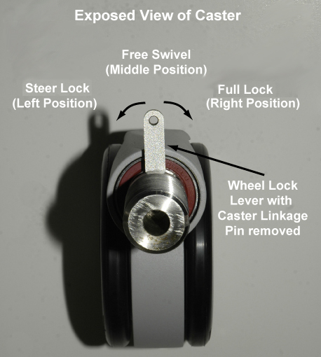
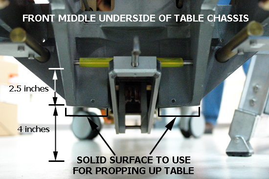

Operating Documentation
Direction 5670000, Rev# 1
Optima MR450w 1.5T Service Methods
Module Version 3.0, Version Date 8/19/08
Operating Documentation |
| Required Persons | Preliminary Reqs | Procedure | Finalization |
|---|---|---|---|
| 1 | 15-30 minutes each caster |
| Item | Qty | Effectivity | Part# | Manufacturer | |
|---|---|---|---|---|---|
| Non-ferrous Level | 1 | - | - | - | |
| Block of Wood (see explanation in 3.1, Step 10) | 1 | - | - | - | |
| Non-ferrous Wrench Set | 1 | - | - | - | |
| Non-ferrous Slotted and Phillips Head Screwdrivers | 1 | - | - | - | |
| Item | Qty | Effectivity | Part# | Manufacturer |
|---|---|---|---|---|
| Loctite 242 Threadlocker | 1 | - | - | - |
| Item | Qty | Effectivity | Part# | Manufacturer | |
|---|---|---|---|---|---|
| Patient Table Caster | 1 | - | 5136198 | - | |
| ||||
| Back injury | ||||
| heavy lifting or strain on back when twisting off caster from patient table. | ||||
| ensure there are two people available to perform this procedure. |
Undock the Patient Table and move it outside of the magnet room.
Remove screws from bottom of Bellows where it attaches to the top of front or rear Base Cover (depending on which caster you are replacing).
Remove the Patient Table Lower Base Covers. Refer to the Patient Table Upper Bellows and Lower Base Side Cover Removal procedure.
Remove the front or rear Base Cover.
Illustration 1: Front and Rear Base Covers

| ||||
| Per factory settings, the default height for each caster from the floor to the indent (as described in Leveling Patient Table in the caster assembly base is 207 mm. However, measure and record the reading for the caster you intend to replace because that is the height you want to achieve after replacing the caster. Remember that the table was adjusted for levelness per the Leveling Patient Table document. | ||||
Disengage rear caster brake lock pedal.
At the desired caster you want to replace, use a 3/8 wrench to remove the caster linkage pin.
VERY IMPORTANT!! You need to reuse the Caster Linkage Pin, Collar, and Collar Bolt from the caster you are replacing. Save these components.
Illustration 2: Caster Linkage Pin

Remove the collar bolt using a 7/16 wrench. See Illustration 2.
| NOTE: | Illustration 2 depicts a floor-level view looking left at the right underside of the caster assembly. Please note that the orientation for each of the four casters is different from each other. Remember the orientation of the collar and bolt hole as you slide the collar down the caster shaft. |
Slide the collar down the shaft so it rests on top of the Wheel Lock Lever.
Looking from a top-down perspective, move the Wheel Lock Lever to the left position.
Illustration 3: Wheel Lever Lock Positions

The Wheel Lock Lever has three positions:
Full Lock, or Brake—The right position locks the caster so the Patient Table cannot move.
Free Swivel—The middle position allows the caster to move freely.
Steer Lock—The left position locks the caster in a direction but the wheels can still spin.
Using a block of wood to prop up the bottom of the Patient Table, turn the caster counter clockwise until it releases from the caster assembly.
Illustration 4: Positioning Block of Wood at Front of Table

Illustration 5: Positioning Block of Wood at Rear of Table

| NOTE: | You must raise either the front or rear base at least 2.5 inches off the floor to establish enough clearance to remove a caster. Therefore, the block of wood you choose must have a thickness of at least 6.5 inches based on using the recommended “raise” points in Illustrations 4 and 5. |
| NOTE: | VERY IMPORTANT!! When you remove the collar from the caster shaft, place a marking on the bottom of collar for easy identification since the collar can be put back onto the caster shaft upside down, thus ensuring that the collar bolt hole will never match up with the bolt hole on the bottom of the caster base assembly. |
Attach the collar to the new caster. Refer to your notes regarding the correct orientation of the collar on the caster shaft.
| NOTE: | VERY IMPORTANT!! Reuse the Caster Linkage Pin, Collar, and Collar Bolt from the old caster. |
Thread the new caster into the caster base turning counter-clockwise.
Return the table to all four casters on the floor and measure the height of the new caster. Achieve a measurement of 8.2 inches (207 mm). Refer to the Leveling Patient Table procedure. Use a non-ferrous level to check the levelness of the Patient Table, and then make appropriate adjustments.
Slide the collar up the caster shaft to its home position and rebolt the collar to the caster base. Suggestion: Wiggle the caster until the collar bolt holes line up.
Apply Loctite and replace the Caster Linkage Pin on the new caster.
| NOTE: | The pin should be captured inside the Caster linkage before threading into the Caster lever. |
Move the Wheel Lever Lock to the Free Swivel or middle position.
Replace the caster base cover and Patient Table Lower Base Cover.
Dock the Patient Table and check the levelness.
Ensure Caster brakes and steer lock work properly.